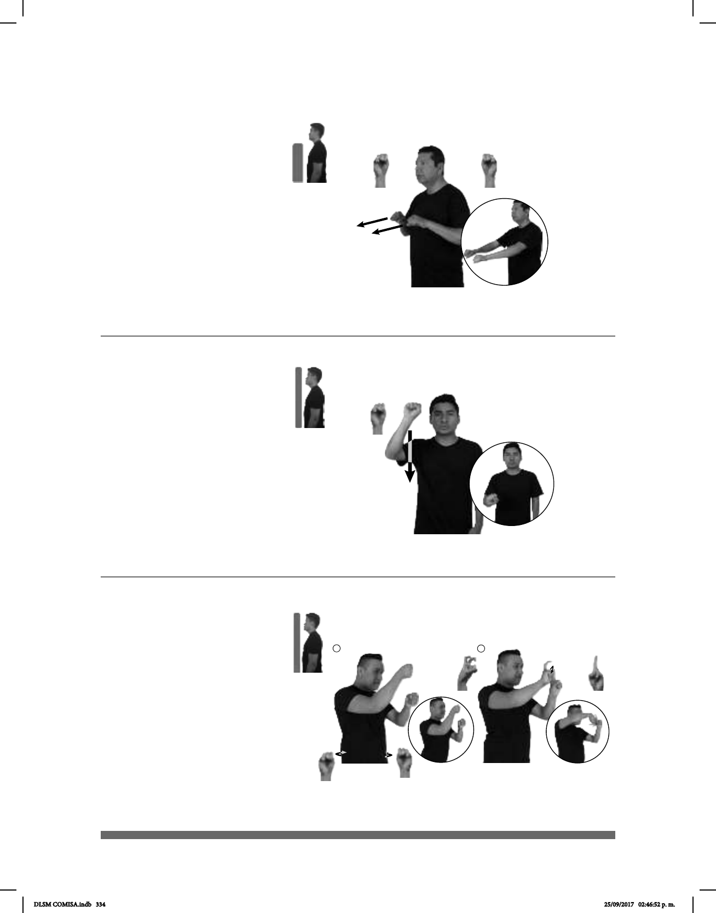

334
Seña: SS
S.1
Palmas hacia abajo.
A la altura del pecho.
Recto hacia el frente.
sust. m. Mercado
perteneciente a una sola empresa
que ofrece los productos ordenados
en anaqueles dispuestos en hileras y
de acuerdo con cierta
sistematización que facilita al
público encontrarlos.
CARNE pro-YO COMPRAR SUPERMERCADO
Yo compro carne en el supermercado.
(121)
Seña: SM
S.1
Palma hacia fuera.
De la cabeza al pecho.
Recto.
1. sust. m. Punto
cardinal situado a la espalda de un
observador a cuya derecha se
localiza el este. 2. sust. m. Región
o territorio situado en la parte sur
determinada.
pro-NOSOTROS CAMINAR A
distancia lugar
SUR PARA AGUA ENCONTRAR
Caminemos hacia el sur para encontrar agua.
(S-122)
1
2
Seña: SC
I. MD y MB S.1, II. MD 2.9,
MB 1.1
MD y MB palmas hacia
adentro; II. MD Palma de adentro hacia abajo.
A la altura del pecho. MB sobre
MD.
MD y MB se mueven
formando círculos hacia la izquierda y hacia
adentro simultáneamente, II. MD forma un
medio
círculo.
Simula la práctica del baile
sujetando un tubo.
sust. m. Espectáculo que presenta
danzas eróticas, normalmente de mujeres, sobre
una mesa o plataforma, la cual está adicionada
con un tubo vertical que funciona como base
del baile.
TABLE-DANCE MUJER DIFERENTE ++ CL: "1"/ CL: "2"
movimiento muñeca
En el table dance, las mujeres bailan sobre la mesa.
(S-123)
DLSM COMISA.indb 334 25/09/2017 02:46:52 p. m.